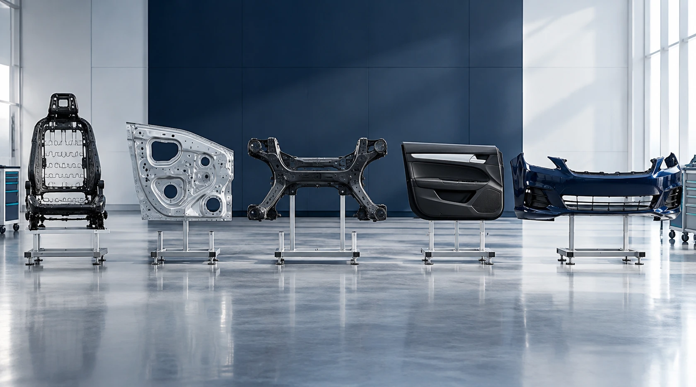
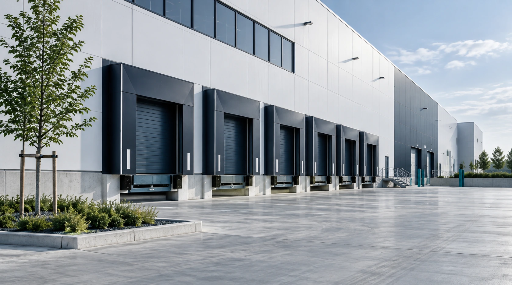

A platform for local manufacturing
TASARU Supplier Hub brings global supplier expertise and critical manufacturing capabilities together in Saudi Arabia. The platform focuses on the practical foundations that support the establishment of local automotive component manufacturing.
Land, manufacturing facilities and production equipment connect specialist knowledge with the requirements of Saudi vehicle production.

Five suppliers, complementary capabilities
Lear, Shin Young, BENTELER, Fangxin and JVIS bring specialist expertise across seating, body-in-white, chassis, interior plastics and exterior plastics. Together, these categories explain the breadth of the supplier platform and its focus on critical automotive components.
Each discipline contributes to a different part of the vehicle, connecting the supplier network through a shared focus on localized manufacturing.

A connected automotive setting
The Hub sits within MASARAT Mobility Park™ in the King Salman Automotive Cluster at King Abdullah Economic City. This setting connects the supplier platform with the wider automotive and mobility environment.
Proximity to King Abdullah Port and key transport routes provides the location context for connections to domestic, regional and international markets.
From expertise to local capability
The platform brings together supplier knowledge, manufacturing foundations and the needs of Saudi automotive production. Exploring the supplier profiles reveals how each component category contributes to this shared purpose.
